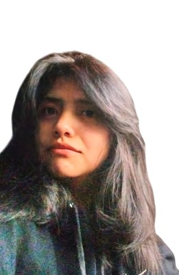

H₂O
01
HuaycoSense
Adaptación de un sistema de monitoreo de nivel de agua de bajo costo para ecosistemas de montaña. Propuesta ganadora de la segunda edición de la Ventana de Investigación sobre Desafíos Hídricos de Aquafondo.
Ver Aquafondo ↗Tecnología para cuidar la vida y el planeta.
Estudiante de Bioingeniería en UTEC. Desarrollo proyectos que conectan la ingeniería, la salud y la conservación de los ecosistemas.

JCCreo en una ingeniería que transforma ideas en soluciones reales.
Soy estudiante de Bioingeniería en la Universidad de Ingeniería y Tecnología (UTEC). Me interesan la biotecnología, la investigación científica y el desarrollo de soluciones que contribuyan a la salud y al cuidado del medio ambiente.
He participado en proyectos interdisciplinarios de monitoreo hídrico, innovación tecnológica y robótica, combinando investigación, creatividad y trabajo en equipo.
Ideas en las que la tecnología responde a desafíos concretos.
Adaptación de un sistema de monitoreo de nivel de agua de bajo costo para ecosistemas de montaña. Propuesta ganadora de la segunda edición de la Ventana de Investigación sobre Desafíos Hídricos de Aquafondo.
Ver Aquafondo ↗Plataforma para revisar fichas técnicas de productos antes de su importación. Proyecto presentado en el Disruptón UTEC 2026.
Visitar plataforma ↗Concepto de parche de monitorización ECG de bajo costo, orientado a la detección temprana de posibles anomalías cardíacas. Proyecto en etapa de prototipado.
En desarrolloReconocimiento en la segunda edición de la Ventana de Investigación sobre Desafíos Hídricos por la propuesta basada en HuaycoSense.
Participación en el evento de innovación con una plataforma para la revisión previa de fichas técnicas de importación.
Participación en actividades de investigación dentro de la organización de robótica.
Organización y coordinación de actividades en equipo estudiantil.
Formación universitaria en la Universidad de Ingeniería y Tecnología, Lima.
Investigación, comunicación, organización y colaboración interdisciplinaria.
Me interesan las colaboraciones en tecnología, investigación y proyectos con impacto social o ambiental.
Lima, Perú · Abierta a colaboraciones